From the tiny "pocket" buns to the "gentle giants," PurrPets showcases the most popular breeds to help you find your perfect hopping companion.
| Breed Name | Photo | Average Weight | Key Feature |
|---|---|---|---|
| Netherland Dwarf | 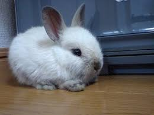 |
2 - 2.5 lbs | Tiny ears and a very compact, "baby-like" face. |
| Holland Lop | 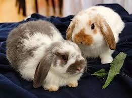 |
2 - 4 lbs | Famous floppy ears and a sweet, "bulldog" face. |
| Flemish Giant | 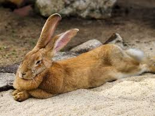 |
15 - 22 lbs | The "King of Rabbits"—as big as a small dog! |
| Mini Rex | 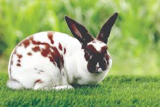 |
3 - 4.5 lbs | Plush, velvet-like fur that feels like a stuffed toy. |
| Dutch | 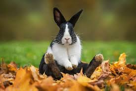 |
4 - 5.5 lbs | Iconic "tuxedo" markings with a white blaze on the nose. |
| Lionhead | 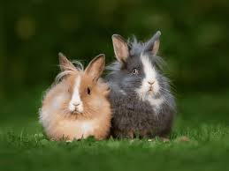 |
2.5 - 3.5 lbs | A dramatic "mane" of fur around their head. |
| Angora | 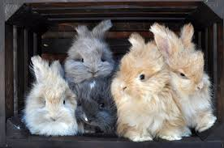 |
5 - 12 lbs | Extremely long, wooly fur (requires daily grooming!). |
| Mini Lop | 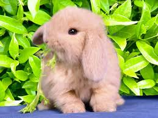 |
4 - 6 lbs | Chubbier and larger than the Holland Lop; very cuddly. |
| Rex | 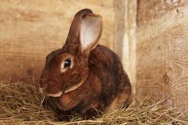 |
Short, dense, plush fur. | The original "Velvet" rabbit—larger than the Mini Rex! |
| Californian | 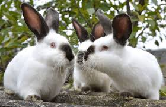 |
White body with dark points. | Looks like a giant Himalayan; known for a calm, hardy nature. |
| English Lop | 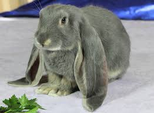 |
Extraordinarily long ears. | The "King of Ears"—their ears can reach 30 inches tip-to-tip! |
| Himalayan | 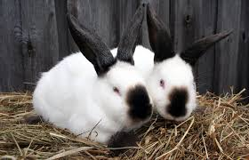 |
Cylindrical body shape. | One of the oldest breeds; they have a very unique, cigar-shaped body. |
| Jersey Wooly | 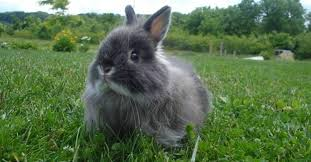 |
Long, wooly fluff. | Known as the "No-Kick Bunny"—extremely docile and tiny. |
| American Sable | 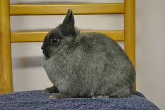 |
Sepia-toned, shaded fur. | Their coat looks like a Siamese cat’s colors in rabbit form. |
| Silver Fox | 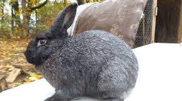 |
Unique "standing" fur. | A rare heritage breed; if you stroke the fur backward, it stays up! |
Generally, Lop-eared rabbits are known for being more laid-back, while Up-eared breeds like the Netherland Dwarf can be a bit more energetic and "spicy." However, every rabbit has a unique personality—much like humans, some are social butterflies and some are grumpy introverts!
The Flemish Giant isn't just a pet; it's a lifestyle. These rabbits are so large they often require an entire bedroom or a large dog crate as their "home base." They are famously docile and often get along wonderfully with cats and calm dogs!